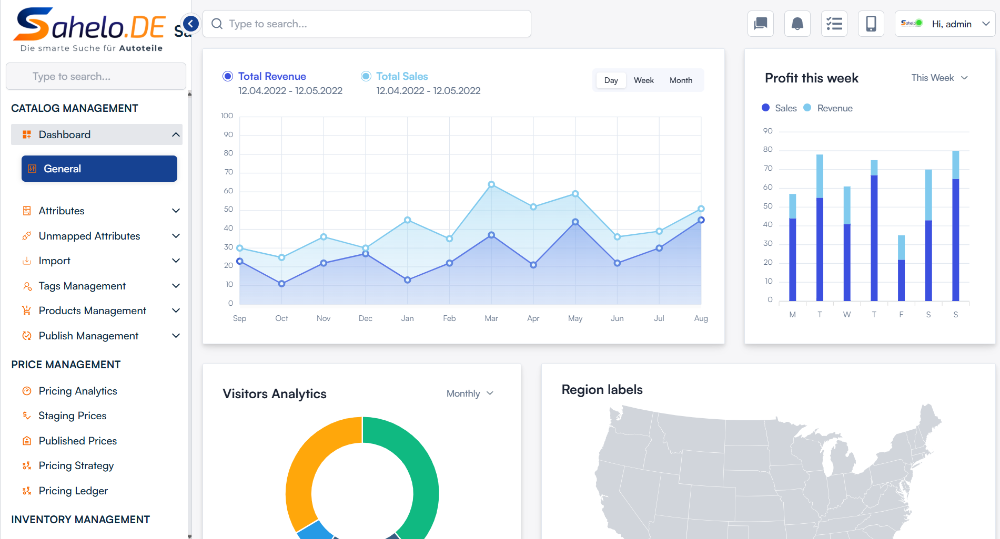
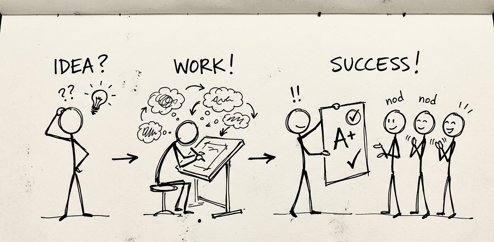

I craft intuitive, scalable experiences that connect human behavior, user needs, and business goals.
Hi, I’m Deeksha Kashyap,a strategist focused on understanding how people think, decide, and interact with digital systems. By combining behavioral insights, UX strategy, and business thinking, I help organizations simplify complexity, improve user outcomes, and build experiences that deliver lasting value.
Case Studies
Real-world design solutions showing end-to-end product design, user behavior tracking, and business impact metrics.

Autolexica — Parts Discovery & Validation
Simplifying complex auto-parts search by reducing multi-platform dependency and enabling accurate vehicle-based validation (VIN, OEM, car model).
View Case Study
Sahelo — Automotive E-Commerce
A complete UX redesign centered on structured discovery, navigation clarity, and delivery transparency, resulting in a +22% increase in search interaction.
View Case Study
Data Dashboard UX Optimization
Standardizing UI patterns, simplifying heavy data layouts, and integrating invoice flows. Reduced core task completion times by 50%.
View Case Study
The Problem No One Noticed
A study of physical supermarket shopping friction where positioning carts on upper floors changed behavior for 80% of customers.
View Case StudyWritings
Reflections on design methodologies, cognitive behavior, and lessons learned in product thinking.
We Design for Rational Users. But Rational Users Don't Exist.
An exploration of how unconscious human biases, emotional triggers, and heuristic shortcuts define how people interact with interfaces.
From Silent Reader to Storyteller
My perspective on why storytelling is the most critical tool for a product designer—communicating ideas, designs, and business value.
Let’s Build Something Meaningful
I’m always open to talking about complex product problems, B2B workflows, or product design collaborations. Let's get in touch.